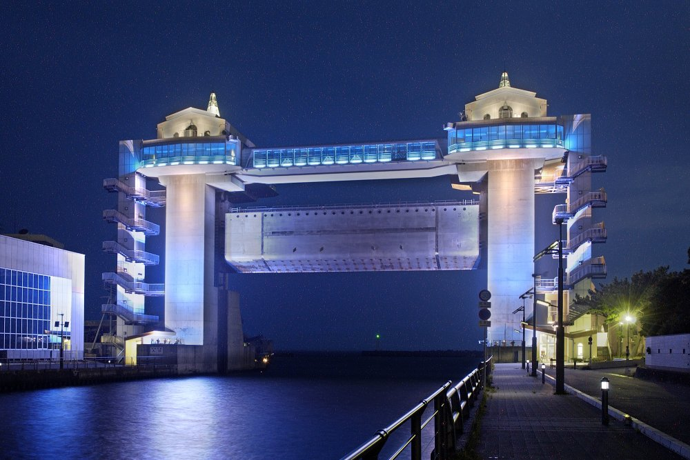
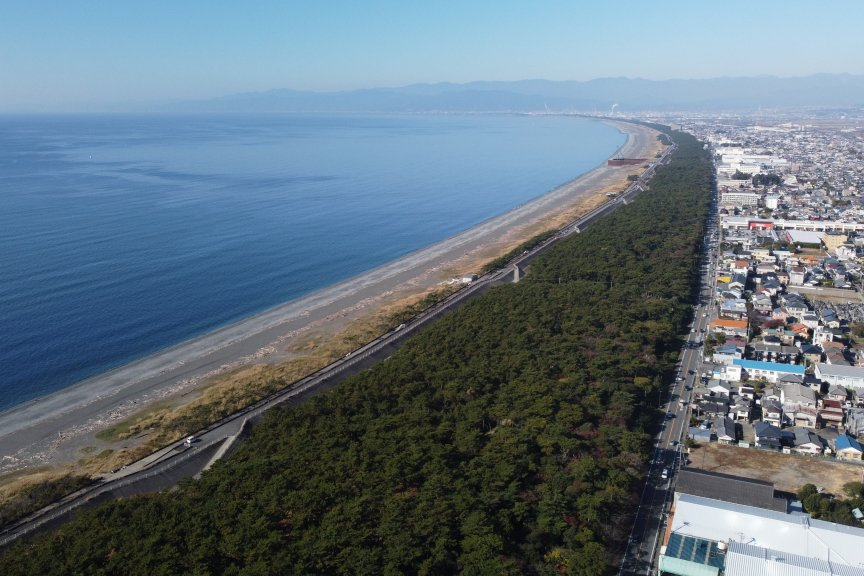
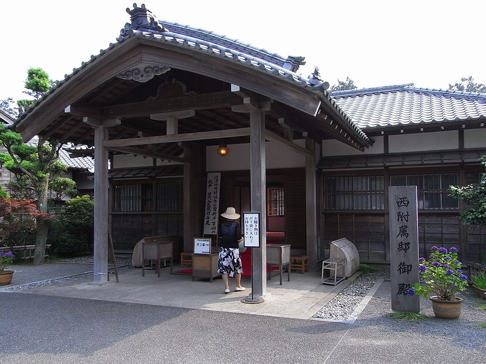
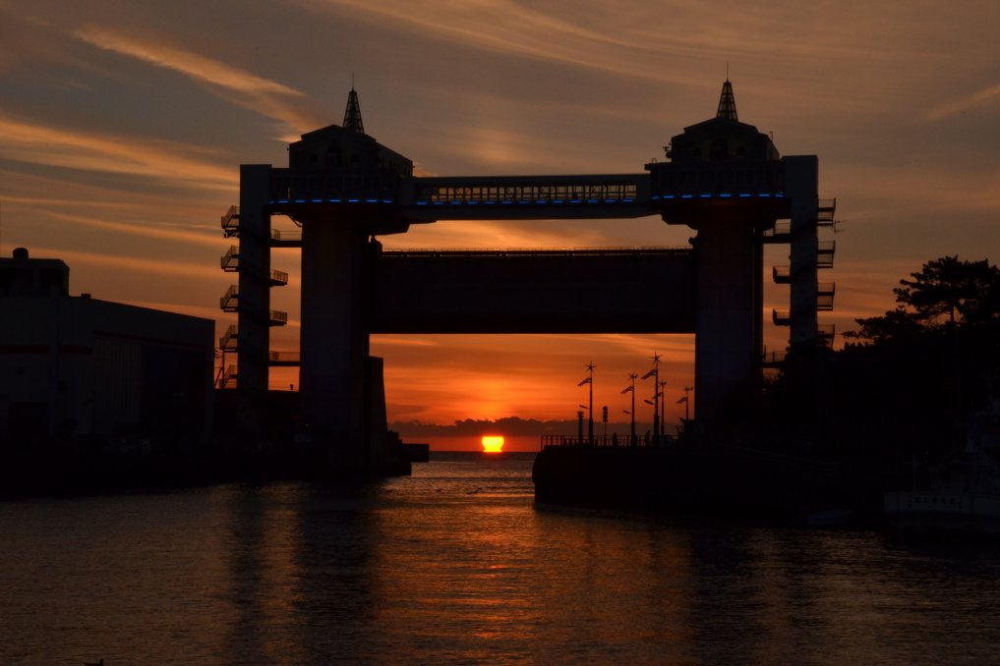
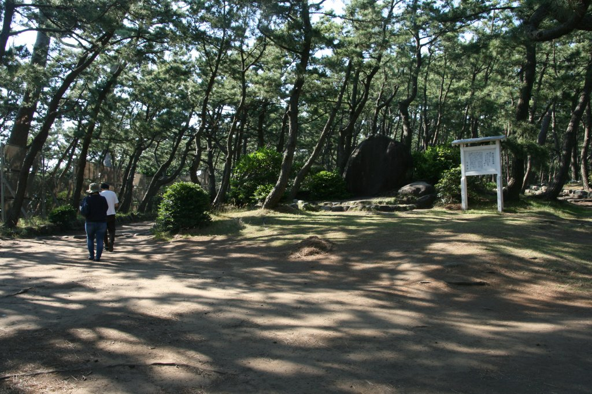
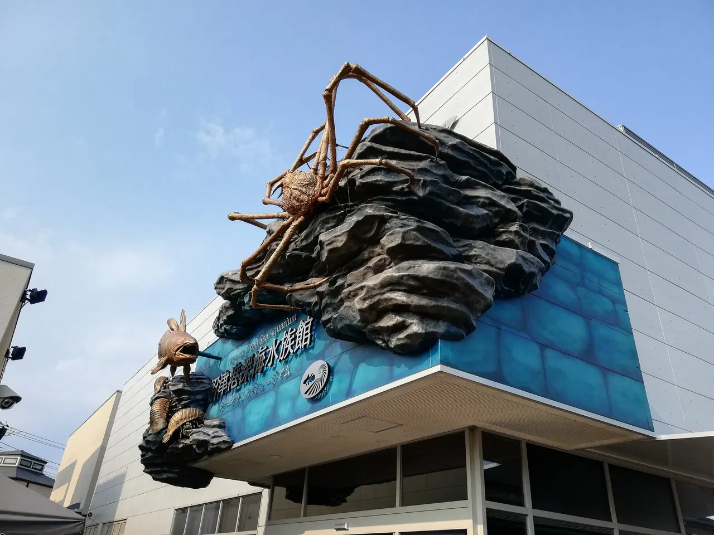
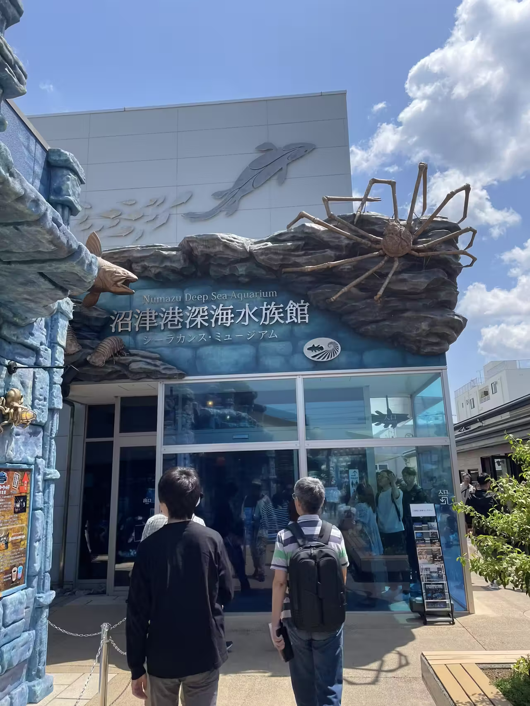
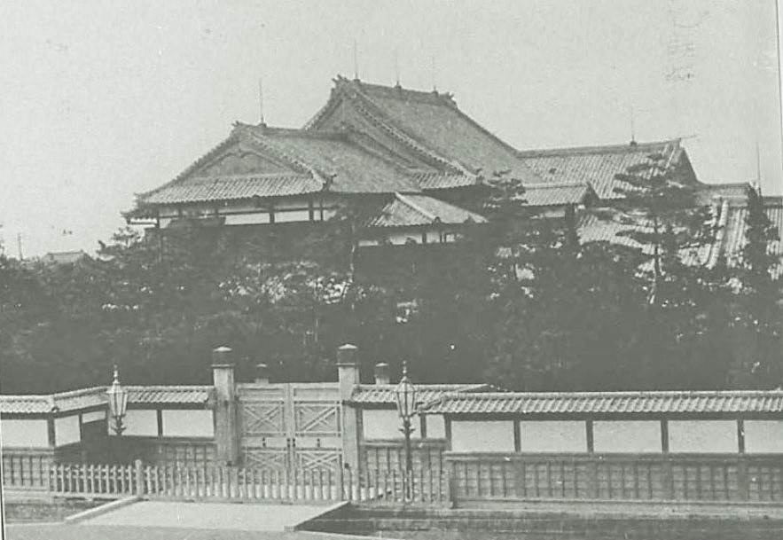

Festival de Verano y fuegos artificiales
Fines de julio
Dos días de tambores, procesiones y fuegos artificiales sobre el río Kano, una tradición desde 1948.
Numazu es una ciudad costera de la prefectura de Shizuoka, frente a la bahía de Suruga y en la base de la península de Izu. Su identidad está ligada al mar: es famosa por su puerto, por su pescado seco (himono) y por las vistas al monte Fuji.

View-O Mirador con vista 360° al monte Fuji
Senbon Matsubara Pinar de 10 km frente al mar Acuario de Aguas Profundas
El primer museo del mundo de especies abisales
Acuario de Aguas Profundas
El primer museo del mundo de especies abisales

Villa Imperial Historia, arquitectura y jardín japonésFines de julio
Dos días de tambores, procesiones y fuegos artificiales sobre el río Kano, una tradición desde 1948.
Verano
Celebración del pescado secado al sol, el producto más típico de Numazu.
Todo el año
Recorrer el mercado, probar sushi y mariscos recién llegados y llevarse himono de souvenir.
Numazu está en el sureste de la prefectura de Shizuoka, cerca de la desembocadura del río Kano, frente a la bahía de Suruga y en la base de la península de Izu.
Se encuentra al oeste de Tokio, a unos 130km.
Primero fue una ciudad con castillo y después una ciudad de posta sobre el Tōkaidō. Por ubicarse en el cruce de rutas terrestres y marítimas, se volvió un centro comercial y administrativo. En el período Edo llegó a tener más de 1.200 edificios, entre ellos 55 hatago (posadas para viajeros).
La estación de tren se inauguró en 1889 y su costa le dio fama de balneario, que se reforzó en 1893, cuando se construyó una villa imperial como lugar de descanso del príncipe heredero. El 1 de julio de 1923, Numazu obtuvo el título de ciudad.
Tiene la costa más larga de todos los municipios de la prefectura y da a la bahía de Suruga, la más profunda de Japón. Gracias a esto, el puerto es rico en pescados y mariscos, incluidos los de aguas profundas. El monte Fuji se ve sobre la ciudad en días despejados.
Actualmente es una ciudad industrial y un centro financiero regional.
El himono: es la costumbre más característica de Numazu. Se trata de pescado secado al sol. Numazu produce más caballa japonesa seca que cualquier otra región de Japón y se suele comprar de souvenir para luego cocinarla a la parrilla o en sartén. Cada verano se celebra un Festival del Himono y, en 2018, la Numazu Himono no Kai logró el récord Guinness de la fila más larga de pescados comestiblescon 3.287 piezas.
El Festival de Verano: a fines de julio, Numazu celebra el Festival de Verano y los Fuegos Artificiales del río Kano, una tradición que se mantiene desde 1948. Durante dos días, el centro de la ciudad se llena de tambores, procesiones y fuegos artificiales sobre el río.
Podés encontrar más información sobre Numazu en Wikivoyage.
Cifras ficticias con fines educativos.
1.250.000 visitantes al año
Una gigantesca compuerta construida en 2004 para proteger la ciudad de los tsunamis, con un mirador en la parte superior. Mide 40 m de ancho y 9,3 m de alto y pesa 406 toneladas, y es una de las compuertas de agua más grandes de Japón. Está diseñada para cerrarse sola en menos de cinco minutos después de un terremoto fuerte.

980.000 visitantes al año
Un bosque de decenas de miles de pinos que se extiende unos 10 km a lo largo del mar, desde la desembocadura del río Kano hasta Tagonoura. Sus pinos siempre verdes, con el monte Fuji nevado de fondo y el atardecer tiñendo de rojo la bahía de Suruga, hicieron que fuera reconocido como uno de los 100 mejores pinares costeros de Japón.
También tiene historia: a fines del siglo XVI fue escenario de una batalla entre los clanes Takeda y Go-Hōjō, y el bosque quedó arrasado. Fue recuperado con esfuerzo durante cinco años por Zōyo Shōnin, un famoso monje budista. Hoy una parte del bosque es un parque con placas en honor a personalidades culturales que lo celebraron.

720.000 visitantes al año
La bahía de Suruga es la más profunda de Japón, con hasta 2.500 m, y por eso es el lugar ideal para este acuario. Es el primer museo del mundo dedicado a especies que viven a más de 200 m bajo la superficie del mar.
Es más conocido por sus especímenes de celacanto, un "fósil viviente": tres disecados y dos congelados. También tiene una pecera con los organismos de la bahía de Suruga y un "planetario" de aguas profundas con especies bioluminiscentes. La tienda del museo vende juguetes, accesorios y dulces con temática de las profundidades.


410.000 visitantes al año
La villa se construyó en 1893 como lugar de descanso para el entonces príncipe heredero, el futuro emperador Taishō, mientras se recuperaba de una enfermedad. En 1969 la ciudad de Numazu se hizo cargo de la villa y sus terrenos, y los abrió al público como parque memorial.
El edificio principal se destruyó en un incendio durante la Segunda Guerra Mundial, pero se conservan los anexos oeste y este. El anexo oeste es un valioso ejemplo de la arquitectura de la corte imperial y permite asomarse a la vida imperial de principios del siglo XX.
